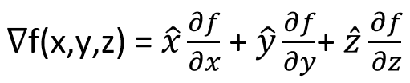

HOME BLOG EBOOKS ABOUT CONTACT SHOP
A multi variable function has multiple derivatives at every point, one with respect to every variable it depends on. For example, a function f(x, y) has 2 derivatives ∂f/∂x and ∂f/∂y at every point (shown in the figure below). Each of these derivatives correspond to the rate of change of the function with respect to any one of the variables. The resultant or the sum of these derivatives denotes the maximum rate of change of the function when all the variables are considered all at one. That is the gradient.
In other words, the Gradient of a multi variable function is a vector that points in the direction of greatest increase (steepest slope) of the function at a point. It is denoted by symbol ∇f. The gradient is analogous to the slope for single variable functions.
In the figure above, the function f is depended on variables x and y. At the point shown, you can clearly see 2 slopes, one corresponding to the variation of x and the other corresponding to the variation of y.
Mathematically, the gradient can be calculated as:

f(x,y) = 2x + yz
So at a point say P(5,-3, 9), the gradient or the max slope is denoted by the vector .
In another way, the gradient can be thought of as an operator that converts a scalar field (scalar function) into a vector field (vector function).